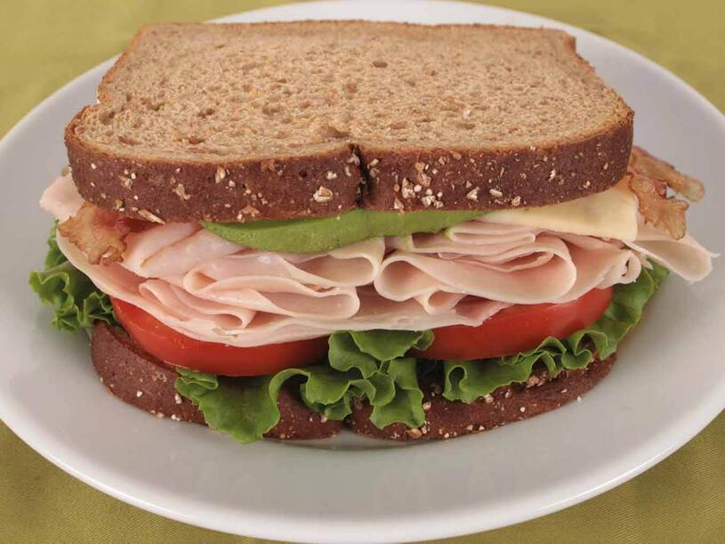

Turkey Sandwich

Ingredients:
- ½ ripe avocado, pitted and peeled
- 2 slices rustic whole wheat bread
- 1 tablespoon mayonnaise
- 4 to 5 rounds of very thinly sliced red onion
- 2 pieces red oak or green leaf lettuce
- 2 slices ripe tomato
- 3-4 slices of oven roasted turkey
Instructions:
- Using a fork, lightly mash the avocado over one slice of bread.
- Spread the mayonnaise over the other slice of bread.
- Scatter the onions over the avocado.
- Top with the lettuce, tomato and turkey.
- Lay the remaining slice of bread over top and cut in half. Sandwich can be made up to 4 hours in advance and kept, tightly wrapped, in the refrigerator.